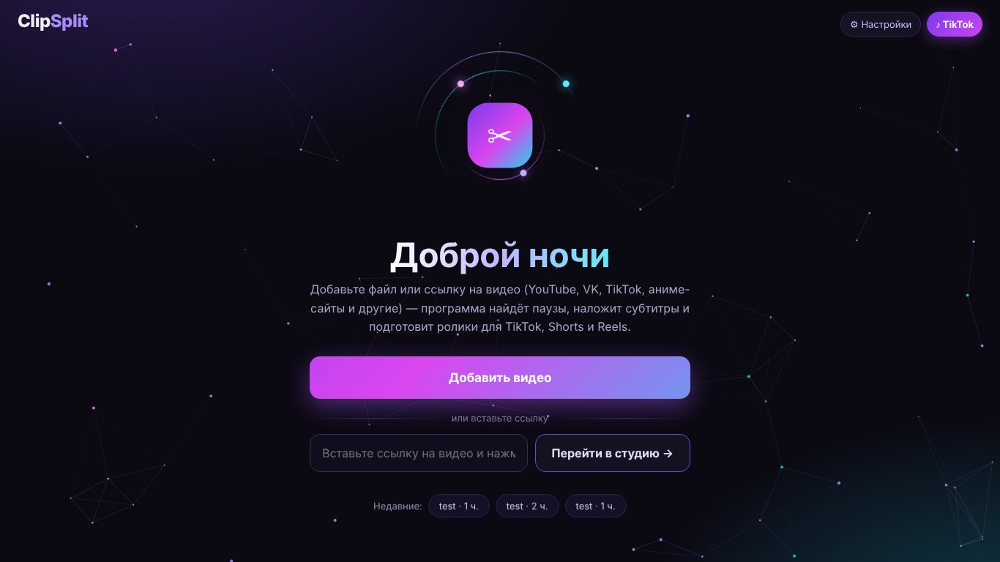
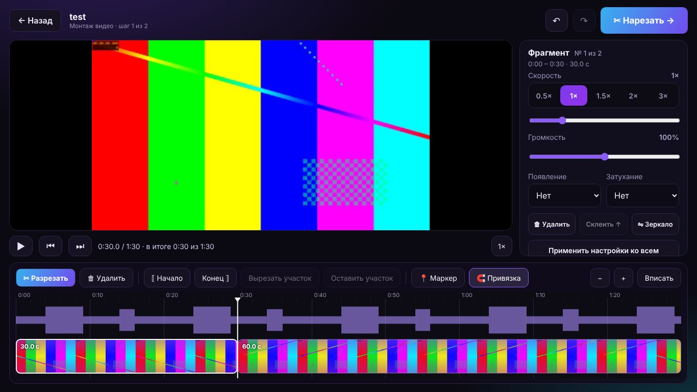
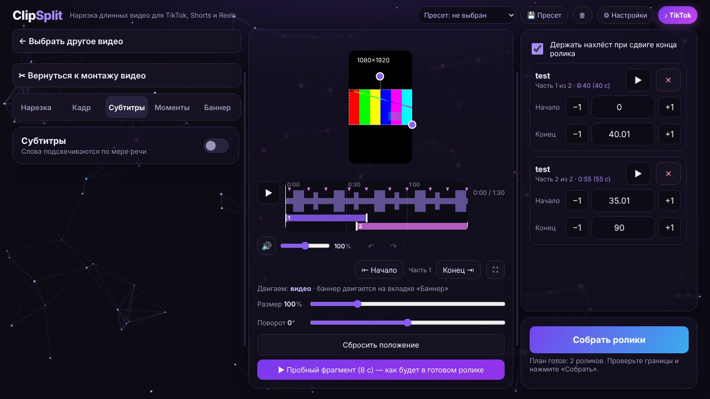
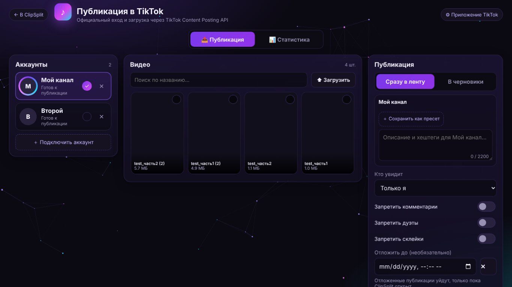

Turn long videos into vertical clipsПревращайте длинные видео в вертикальные ролики
ClipSplit is a Windows desktop app for creators. It finds the best moments in your own videos, cuts them to 9:16, adds subtitles and a branded banner, and sends the finished clips to your TikTok account.ClipSplit — программа для Windows для авторов видео. Она находит лучшие моменты в ваших видео, нарезает их в формате 9:16, добавляет субтитры и баннер и отправляет готовые ролики в ваш аккаунт TikTok.
What ClipSplit doesЧто умеет ClipSplit
Everything you need to repurpose your own long-form content into short clips.Всё, чтобы превратить ваш длинный контент в короткие ролики.
Smart cuttingУмная нарезка
Splits a video at natural pauses into clips of the length you choose (30–90 s) so sentences are never cut in half.Режет видео по естественным паузам на ролики нужной длины (30–90 с), не обрывая фразы.
Automatic subtitlesАвтоматические субтитры
Speech recognition runs locally on your computer. Words are highlighted as they are spoken, and you can edit every caption.Распознавание речи работает на вашем компьютере. Слова подсвечиваются по мере речи, каждую подпись можно править.
Vertical 9:16 framingВертикальный кадр 9:16
Face tracking keeps the speaker in frame; choose crop, fit or blurred background.Слежение за лицом держит говорящего в кадре; обрезка, вписывание или размытый фон.
Timeline editorМонтаж на таймлайне
Cut, delete, change speed and volume, add zoom, filters, background music and a “Part N/M” plate.Разрезание, удаление, скорость и громкость, зум, фильтры, фоновая музыка и плашка «Часть N/M».
Publishing to TikTokПубликация в TikTok
Sign in with your TikTok account, review each clip, then upload it to your drafts or post it — only when you press the button.Войдите через аккаунт TikTok, проверьте каждый ролик и отправьте в черновики или опубликуйте — только по вашей кнопке.
Channel statisticsСтатистика канала
See followers, views and likes of your own connected accounts in one place.Подписчики, просмотры и лайки ваших подключённых аккаунтов в одном месте.
How it worksКак это работает
From a long video to published clips in a few steps.От длинного видео до опубликованных роликов за несколько шагов.
- Add your video. Choose a file or paste a link to a video you own or have the rights to use.Добавьте видео. Выберите файл или вставьте ссылку на видео, на которое у вас есть права.
- Edit and review the plan. Trim, cut and reorder fragments; ClipSplit proposes clip boundaries you can adjust.Смонтируйте и проверьте план. Обрежьте и порежьте фрагменты; ClipSplit предлагает границы роликов, их можно поправить.
- Add subtitles and a banner. Pick a preset for fonts, colors and layout.Добавьте субтитры и баннер. Выберите пресет шрифтов, цветов и расположения.
- Build the clips. Rendering happens on your computer.Соберите ролики. Рендер идёт на вашем компьютере.
- Publish. Connect your TikTok account, write the caption, choose privacy settings and send the clip to TikTok.Опубликуйте. Подключите аккаунт TikTok, напишите описание, выберите приватность и отправьте ролик.
ScreenshotsСкриншоты
The ClipSplit desktop interface.Интерфейс ClipSplit на компьютере.




TikTok integrationИнтеграция с TikTok
ClipSplit uses TikTok Login Kit and the Content Posting API. Nothing is posted without the user's explicit action.ClipSplit использует TikTok Login Kit и Content Posting API. Ничего не публикуется без явного действия пользователя.
| Scope | Why ClipSplit needs itЗачем нужен |
|---|---|
user.info.basic | Show the connected account's name and avatar so you know where a clip will go.Показать имя и аватар подключённого аккаунта, чтобы было видно, куда уйдёт ролик. |
video.upload | Send a finished clip to the user's TikTok drafts.Отправить готовый ролик в черновики TikTok пользователя. |
video.publish | Post a finished clip directly after the user reviews it and presses “Publish”.Опубликовать готовый ролик после того, как пользователь проверил его и нажал «Опубликовать». |
user.info.stats, video.list | Show the user's own followers, views and likes in the in-app statistics tab.Показать подписчиков, просмотры и лайки самого пользователя во вкладке статистики. |
The user chooses the caption, the privacy level and whether comments, duets and stitches are allowed for each clip. The app shows which account the clip will be posted to before sending. Access can be revoked at any time in TikTok settings or by disconnecting the account in ClipSplit.Пользователь сам выбирает описание, приватность и разрешение комментариев, дуэтов и склеек для каждого ролика. Перед отправкой приложение показывает, в какой аккаунт уйдёт ролик. Доступ можно отозвать в настройках TikTok или отключив аккаунт в ClipSplit.
ContactКонтакты
Questions or requests about your data: Вопросы и запросы по данным: CONTACT_EMAIL